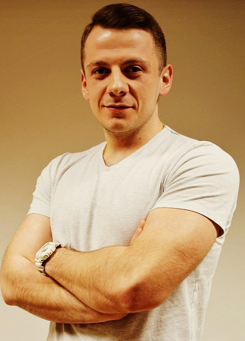

<!--  -->

<div class="about">


  <div class="content">

    <div class="tabs">
      <div class="tabs__menu">
        <ul class="tabs__menu__list">
          <li class="tabs__menu__list--item">
            <a href=""></a>
          </li>
          <li class="tabs__menu__list--item">
            <a href=""></a>
          </li>
        </ul>
      </div>
      <div>
        <div class="header">
          <h1 class="header__text">About me</h1>
        </div>
        <div class="content__text">
          <p>
            Jestem absolwentem Katolickiego Uniwersytetu Lubelskiego im. Jana Pawła II w Lublinie na kierunku Informatyka
            (specjalizacja programowanie).
            Aktualnie .net developer z ponad 2-letnim doświadczeniem
            oraz 6 miesięcznym doświadczeniem w testowaniu oprogramowania z wykorzystaniem języka Java.
            Programowanie to moja pasja! W trakcie studiów aktywnie uczesniczyłem w kole informatyków. Dzięki czemu miałem
            okazje być jednym z organizatorów największej konferencji IT na lubelszczyźnie - Lubelskich Dni Informatyki.
          </p>
        </div>
      </div>
    </div>


  </div>
</div>
